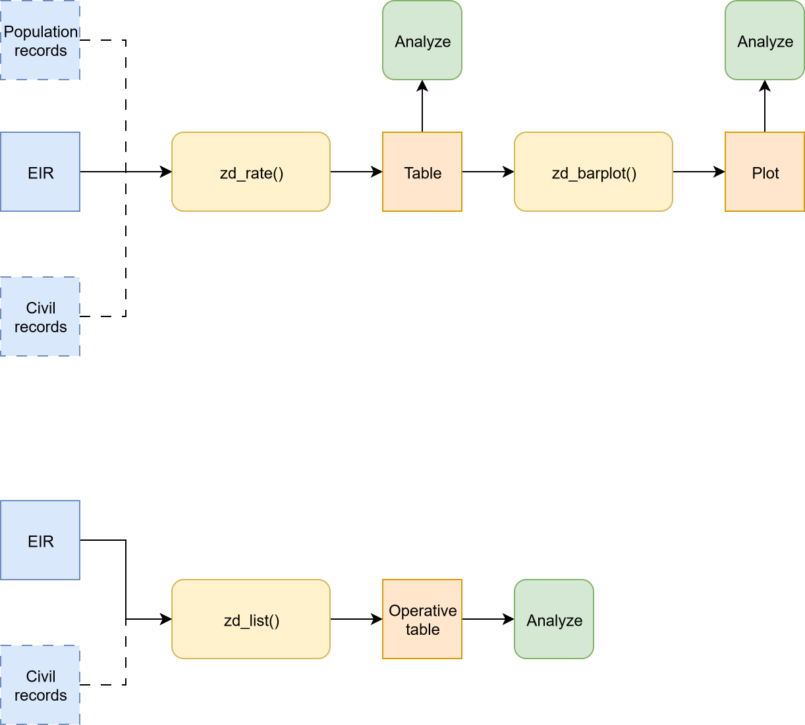
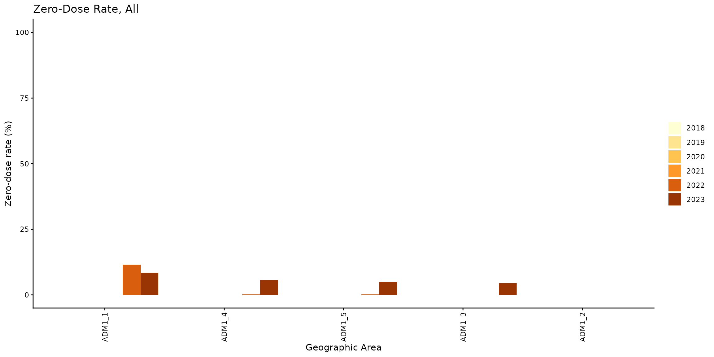

Zero-Dose Rate
Indicator UD 2.9
PAHO/CIM
November 20, 2026
Source:vignettes/articles/en/zero_dose_en.Rmd
zero_dose_en.RmdRationale
The objective of this indicator is to identify the people who have no record of receiving a given set of vaccines, known as zero-dose people. They are the most exposed to vaccine-preventable diseases and usually belong to communities that the immunization program is not reaching. Knowing how many there are, where they live and, when individual records are available, who they are, allows the program to plan targeted strategies to reach them.
The zero-dose rate is the complement of coverage for a specific birth cohort:
The total people in the birth cohort (the denominator) is taken from the most detailed source provided:
- Individual population records (
data.pop_ids), if given. These take priority over any other source. - Otherwise, a population table (
data.pop), if given. - Otherwise, the people found in the EIR itself.
Note
All functions used for zero-dose analyses within immunABC begin with the
zd_prefix.
Glossary
Zero-Dose
A zero-dose person is someone with no record of receiving a given vaccine. When the analysis covers several vaccines at once, a zero-dose person is someone with no record of any of them.
Birth Cohort
A birth cohort is the group of all individuals born within the same period of time, typically a single calendar year. For example, the 2022 birth cohort comprises everyone born during the year 2022.
Political Geographic Boundaries
Throughout this vignette, we will make reference to different levels of political geographic boundaries. These levels are defined by the country/territory and can have different names from country to country. immunABC is agnostic to these names and requires the user to recode their variable names to fit the immunABC structure.
Namely, immunABC can distinguish three administrative levels, which listed from top to bottom level are: ADM0, ADM1 and ADM2.
- ADM0: The country. This is the top-most administrative level.
- ADM1: The first geographic subdivision in the country. ADM0 contains several ADM1 subdivisions.
- ADM2: The second geographic subdivision in the country. Each ADM1 contains several ADM2 subdivisions.
Vaccine Names
Our example datasets use a specific naming convention for the vaccine doses. This might not match your own naming schemes, but it will not affect the usage of the package as long as you make sure to be consistent when naming vaccine doses.
For example, the vaccine names used in the immunABC package are:
| Abbreviation | Full Name |
|---|---|
| SRP1 | Measles, Rubella, and Mumps Vaccine (1st dose) |
| DTP1 | Diphtheria, Tetanus, and Pertussis Vaccine (1st dose) |
| DTP2 | Diphtheria, Tetanus, and Pertussis Vaccine (2nd dose) |
| DTP3 | Diphtheria, Tetanus, and Pertussis Vaccine (3rd dose) |
| BCG RN | Bacillus Calmette–Guérin Vaccine (at birth) |
| YFV1 | Yellow Fever Vaccine (1st dose) |
Usage
Install Package
The first step to run the zero-dose analyses is to install the immunABC package available on GitHub.
devtools::install_github("IM-Data-PAHO/immunabc")Load Data
The functions in this module work with up to three datasets in a specific format.
- Your EIR.
- Optionally, a table with population denominators at the same geographic level of disaggregation as your analysis.
- Optionally, a table of individual population records, such as a civil registry, that can be cross-referenced with the EIR.
To make it easy for you to test out immunABC’s functionality and understand the structure we require for your datasets, we will now explore the example datasets provided by immunABC that are used by this module.
EIR
The immunabc::immunABC.EIR data frame provides a
simulated, nominal-level table representing individual vaccination
events from an Electronic Immunization Registry (EIR). Each row
corresponds to a single vaccination act for a person, including
information on their residence, where they were vaccinated (occurrence),
their date of birth, and the vaccine dose received.
immunABC.EIR %>% head() %>% kable(caption = "Example Electronic Immunization Registry")| ID | date_birth | date_vax | ADM1_residence | ADM2_residence | ADM1_occurrence | ADM2_occurrence | dose |
|---|---|---|---|---|---|---|---|
| 191997 | 2023-08-08 | 2023-12-26 | ADM1_4 | ADM2_4_35 | ADM1_4 | ADM2_4_35 | DTP2 |
| 212189 | 2023-12-20 | 2023-12-26 | ADM1_5 | ADM2_5_61 | ADM1_5 | ADM2_5_61 | BCG RN |
| 118063 | 2022-09-15 | 2023-12-26 | ADM1_2 | ADM2_2_5 | ADM1_2 | ADM2_2_5 | DTP1 |
| 118063 | 2022-09-15 | 2023-12-26 | ADM1_2 | ADM2_2_5 | ADM1_2 | ADM2_2_5 | YFV1 |
| 130751 | 2022-10-27 | 2023-12-12 | ADM1_5 | ADM2_5_55 | ADM1_5 | ADM2_5_55 | YFV1 |
| 136532 | 2021-09-21 | 2023-12-26 | ADM1_3 | ADM2_3_12 | ADM1_3 | ADM2_3_12 | SRP1 |
-
ID: Unique person identification number. -
date_birth: Date of birth of person. -
date_vax: Date of vaccination event. - ADM1: Refers to the first geographic administrative level of the country.
- ADM2: Refers to the second geographic administrative level of the country.
- Residence: Refers to the place where the person lives.
- Occurrence: Refers to the place where the vaccination event
occurred.
-
dose: A combined variable representing the vaccine type and its corresponding dose number. For example, DTP1 refers to the first dose of a vaccine containing diphtheria, tetanus, and pertussis components.
Population Denominators
While not mandatory, this module lets you provide a population table to use as denominator. The geographic level of this table will be directly dependent on the geographic level of your analysis. For example, if you were to perform an analysis at ADM1 level, the required population denominator table must contain the following.
immunABC.pop.ADM1 %>% head() %>% kable(caption = "Example Population at ADM1")| ADM1 | year | age | population |
|---|---|---|---|
| ADM1_1 | 2022 | 0 | 1718.189 |
| ADM1_1 | 2022 | 1 | 1808.964 |
| ADM1_1 | 2023 | 0 | 1703.145 |
| ADM1_1 | 2023 | 1 | 1792.443 |
| ADM1_2 | 2022 | 0 | 6575.261 |
| ADM1_2 | 2022 | 1 | 6922.644 |
Note that this table is in long format and contains the
population of children of a specific age
during a given year for a certain ADM1
level.
Note
Please take into account that since this analysis is performed with birth cohorts, only the rows with
age=0 are of interest in the population table, since these represent the number of children that belong to that specific birth cohort (year).
Individual Population Records
Also optional, this module lets you provide a table of individual
population records. Since each row is a person, it allows the module to
count the people missing from the EIR and to list each of them. The
immunabc::immunABC.pop_ids_expanded_to_pop data frame
contains every person in immunABC.EIR, plus simulated
people with no vaccination records, so that each birth cohort matches
the population in immunABC.pop.ADM2.
immunABC.pop_ids_expanded_to_pop %>% head() %>% kable(caption = "Example Individual Population Records")| ID | date_birth | ADM1_residence | ADM2_residence | name |
|---|---|---|---|---|
| 1 | 2013-12-14 | ADM1_2 | ADM2_2_5 | Dion Rodriguez Romo |
| 2 | 1998-12-21 | ADM1_3 | ADM2_3_8 | Henry Hernandez Contreras |
| 3 | 1986-12-02 | ADM1_3 | ADM2_3_16 | Moses Torres Martinez |
| 4 | 1986-06-07 | ADM1_3 | ADM2_3_17 | Keylian Saldana Wilson |
| 5 | 1958-09-10 | ADM1_3 | ADM2_3_13 | Berenise Salazar Bautista Rubio |
| 6 | 2017-09-18 | ADM1_2 | ADM2_2_5 | Rocela Cazares Medina |
-
ID: Unique person identification number. It must match theIDused in the EIR. -
name: Name of the person. -
date_birth: Date of birth of person. -
ADM1_residence/ADM2_residence: First and second geographic administrative levels of the person’s residence.
Note
The simulated people with no vaccination records were only added to the 2022 and 2023 birth cohorts. This dataset was built to match
immunABC.pop.ADM2, and the example population tables only hold the population of those two birth cohorts. People born in any other year come only from the EIR, so all of them have at least one vaccination record.
Zero-dose analysis
This module lets users estimate the zero-dose rate by birth cohort
for any vaccine, or for a set of vaccines at once. It represents the
percentage of people of a specific year of birth with no record of the
vaccine, regardless of when they would have been vaccinated. Results can
be aggregated at the national level or subnational levels
(ADM1 or ADM2).
When individual records are available (the EIR alone, or
data.pop_ids), the module can also produce an operative
output: one row per person, with the date of each vaccine and a
Category column. Filtering this table for
ZERO_DOSE gives the list of zero-dose people to follow
up.
Expected Workflow
The zd_rate(), zd_barplot() and
zd_list() functions provide a way of analyzing, visualizing
and acting on the zero-dose rate. Their relationships are shown in
Figure 1.

-
zd_rate()computes the zero-dose rate for each vaccine, birth cohort and geographic area. When novaccinesare specified, it also includes the rows withdose“All”, which count as vaccinated the people with at least one vaccine. -
zd_barplot()takes the output ofzd_rate()and plots one panel per vaccine. Whenzd_rate()was run withoutvaccines, it plots the combined “All” rate instead. If a group has more vaccinated people than population, its rate is negative; the bar shows its absolute value with a red outline. -
zd_list()produces the operative output: one row per person, taken fromdata.pop_idsand the EIR ifdata.pop_idsis provided, or from the EIR otherwise, with the date of each vaccine and aCategorycolumn:COMPLETEif the person has all the vaccines analyzed,PARTIALif they have some, andZERO_DOSEif they have none. Since it lists people, it does not use population tables.
Example 1: EIR only
Here we compute the zero-dose rate for the first and third doses of DTP and the first dose of the measles-containing vaccine, for the 2022 and 2023 birth cohorts, using only the EIR. The denominator is therefore the people found in the EIR.
# compute zero-dose rate
zd_eir <- zd_rate(
data.EIR = immunABC.EIR,
geo_level = "ADM1",
vaccines = c("DTP1", "DTP3", "SRP1"), # this can be a single vaccine
birth_cohorts = c(2022, 2023) # this can be a single year
)
# show rate in table
zd_eir %>%
kable(digits = 2, caption = "Zero-dose rate by ADM1 level")| dose | birth_cohort | ADM1 | numerator | population | coverage | zd_rate |
|---|---|---|---|---|---|---|
| DTP1 | 2022 | ADM1_1 | 1173 | 1733 | 67.69 | 32.31 |
| DTP1 | 2022 | ADM1_2 | 5939 | 12428 | 47.79 | 52.21 |
| DTP1 | 2022 | ADM1_3 | 27168 | 50238 | 54.08 | 45.92 |
| DTP1 | 2022 | ADM1_4 | 3768 | 6382 | 59.04 | 40.96 |
| DTP1 | 2022 | ADM1_5 | 1969 | 3488 | 56.45 | 43.55 |
| DTP1 | 2023 | ADM1_1 | 1093 | 1488 | 73.45 | 26.55 |
| DTP1 | 2023 | ADM1_2 | 4979 | 8066 | 61.73 | 38.27 |
| DTP1 | 2023 | ADM1_3 | 21154 | 31819 | 66.48 | 33.52 |
| DTP1 | 2023 | ADM1_4 | 2968 | 3984 | 74.50 | 25.50 |
| DTP1 | 2023 | ADM1_5 | 1585 | 2426 | 65.33 | 34.67 |
| DTP3 | 2022 | ADM1_1 | 1025 | 1733 | 59.15 | 40.85 |
| DTP3 | 2022 | ADM1_2 | 5279 | 12428 | 42.48 | 57.52 |
| DTP3 | 2022 | ADM1_3 | 24746 | 50238 | 49.26 | 50.74 |
| DTP3 | 2022 | ADM1_4 | 3716 | 6382 | 58.23 | 41.77 |
| DTP3 | 2022 | ADM1_5 | 1900 | 3488 | 54.47 | 45.53 |
| DTP3 | 2023 | ADM1_1 | 374 | 1488 | 25.13 | 74.87 |
| DTP3 | 2023 | ADM1_2 | 2353 | 8066 | 29.17 | 70.83 |
| DTP3 | 2023 | ADM1_3 | 10498 | 31819 | 32.99 | 67.01 |
| DTP3 | 2023 | ADM1_4 | 1756 | 3984 | 44.08 | 55.92 |
| DTP3 | 2023 | ADM1_5 | 914 | 2426 | 37.68 | 62.32 |
| SRP1 | 2022 | ADM1_1 | 869 | 1733 | 50.14 | 49.86 |
| SRP1 | 2022 | ADM1_2 | 4564 | 12428 | 36.72 | 63.28 |
| SRP1 | 2022 | ADM1_3 | 20552 | 50238 | 40.91 | 59.09 |
| SRP1 | 2022 | ADM1_4 | 3388 | 6382 | 53.09 | 46.91 |
| SRP1 | 2022 | ADM1_5 | 1679 | 3488 | 48.14 | 51.86 |
| SRP1 | 2023 | ADM1_1 | 0 | 1488 | 0.00 | 100.00 |
| SRP1 | 2023 | ADM1_2 | 2 | 8066 | 0.02 | 99.98 |
| SRP1 | 2023 | ADM1_3 | 5 | 31819 | 0.02 | 99.98 |
| SRP1 | 2023 | ADM1_4 | 0 | 3984 | 0.00 | 100.00 |
| SRP1 | 2023 | ADM1_5 | 1 | 2426 | 0.04 | 99.96 |
Parameters accepted by zd_rate()
-
data.EIR: EIR data frame in immunABC format. -
geo_level:"ADM0"(default),"ADM1", or"ADM2". -
vaccines: Character vector of doses to include, one rate perdose. DefaultNULLincludes all doses indata.EIRand adds the combined “All” rows. -
birth_cohorts: Numeric vector of birth cohort year(s) to include. DefaultNULLincludes every person, regardless of birth year. -
data.pop: Population denominators at the same geographic level asgeo_level. DefaultNULL. See Example 2. -
data.pop_ids: Individual population records, used as denominators instead ofdata.popor the EIR. DefaultNULL. See Example 3.
We can visually observe these results by calling the
zd_barplot() function as shown below.
# visualize output from zd_rate()
zd_eir_plot <- zd_barplot(data = zd_eir)
# show
zd_eir_plot
Parameters accepted by zd_barplot()
-
data: Output ofzd_rate(). -
vaccine: Character vector of doses to plot, one panel perdose. DefaultNULLplots the combined “All” rate if present indata, or every dose otherwise. -
birth_cohorts: Numeric vector of birth cohort year(s) to plot, up to 9. DefaultNULLplots the latest 9 cohorts indata. -
within_ADM1: Character vector to filter specific ADM1 units whendatais at the ADM2 level. Default:NULL. -
palette: RColorBrewer palette for the birth cohort colors. Default:"YlOrBr".
Since everyone in the EIR has at least one vaccination record, the rates show who is missing each specific vaccine, not who has no vaccines at all. Comparing panels shows which vaccines leave more people behind in each area.
The operative output, produced by zd_list(), lists every
person in the EIR with the date of each vaccine analyzed.
# list each person and their vaccines
zd_eir_list <- zd_list(
data.EIR = immunABC.EIR,
vaccines = c("DTP1", "DTP3", "SRP1"),
birth_cohorts = c(2022, 2023)
)
# show the first rows
zd_eir_list %>% head(10) %>% kable(caption = "Operative output")| ID | date_birth | ADM1_residence | ADM2_residence | DTP1 | DTP3 | SRP1 | Category |
|---|---|---|---|---|---|---|---|
| 569 | 2022-07-28 | ADM1_2 | ADM2_2_5 | 2022-10-25 | 2023-11-17 | 2023-11-17 | COMPLETE |
| 1843 | 2022-06-21 | ADM1_3 | ADM2_3_15 | NA | 2022-02-08 | 2022-12-06 | PARTIAL |
| 2399 | 2022-03-05 | ADM1_3 | ADM2_3_16 | NA | NA | 2023-03-10 | PARTIAL |
| 2736 | 2022-02-07 | ADM1_2 | ADM2_2_5 | 2022-04-11 | 2022-08-23 | 2023-02-22 | COMPLETE |
| 3074 | 2022-03-30 | ADM1_2 | ADM2_2_5 | NA | 2022-11-14 | 2023-05-24 | PARTIAL |
| 3520 | 2022-07-04 | ADM1_2 | ADM2_2_5 | 2022-09-04 | 2023-03-05 | NA | PARTIAL |
| 3717 | 2022-03-30 | ADM1_3 | ADM2_3_13 | 2022-06-18 | 2022-10-04 | 2023-05-19 | COMPLETE |
| 4022 | 2022-01-14 | ADM1_3 | ADM2_3_14 | 2022-03-21 | NA | NA | PARTIAL |
| 4121 | 2022-04-18 | ADM1_2 | ADM2_2_5 | 2022-06-18 | NA | NA | PARTIAL |
| 5102 | 2022-06-26 | ADM1_3 | ADM2_3_20 | 2022-09-05 | 2023-01-03 | NA | PARTIAL |
Parameters accepted by zd_list()
-
data.EIR: EIR data frame in immunABC format. -
vaccines: Character vector of doses to include, one date column perdose. DefaultNULLincludes all doses indata.EIR. -
birth_cohorts: Numeric vector of birth cohort year(s) of the people to list. DefaultNULLlists every person, regardless of birth year. -
data.pop_ids: Individual population records. If provided, every person in it is listed, plus the people in the EIR who are missing from it, and the output includesnameandSourcecolumns. DefaultNULLlists the people in the EIR. See Example 3.
Note
The population table (
data.pop) or the individual population records (data.pop_ids) may cover fewer people than the EIR, for example if they are missing some birth cohorts, some geographic areas, or some of the people registered in the EIR. Each function handles this as follows:
zd_rate()always counts the vaccinated people from the EIR, whether or not they are in the denominators. Birth cohorts or areas found in the EIR but missing from the denominators are kept, withNApopulation, coverage and zero-dose rate. If a group has more vaccinated people in the EIR than in its denominator, its coverage goes above 100%, its zero-dose rate becomes negative, and a warning is shown.zd_barplot()leaves out the rows withNAzero-dose rate, and draws negative rates as their absolute value with a red outline, adding a caption to the plot.zd_list()lists every person indata.pop_ids, plus the people in the EIR who are missing from it. Those people have noname, their date of birth and residence are taken from their earliest EIR record, and theirSourcecolumn isEIR_ONLYinstead ofPOP_IDS. A warning reports how many of them there are. Withoutdata.pop_idsit lists everyone in the EIR, and it never usesdata.pop.
Example 2: EIR and population denominators
Here we compute the rates for the same vaccines and birth cohorts, but take the denominators from the population table at ADM1 level. Since it has no individual records, there is no operative output.
# compute zero-dose rate
zd_pop <- zd_rate(
data.EIR = immunABC.EIR,
geo_level = "ADM1",
vaccines = c("DTP1", "DTP3", "SRP1"),
birth_cohorts = c(2022, 2023),
data.pop = immunABC.pop.ADM1
)
# show rate in table
zd_pop %>%
kable(digits = 2, caption = "Zero-dose rate by ADM1 level, using population denominators")| dose | birth_cohort | ADM1 | numerator | population | coverage | zd_rate |
|---|---|---|---|---|---|---|
| DTP1 | 2022 | ADM1_1 | 1173 | 1718.19 | 68.27 | 31.73 |
| DTP1 | 2022 | ADM1_2 | 5939 | 6575.26 | 90.32 | 9.68 |
| DTP1 | 2022 | ADM1_3 | 27168 | 30766.52 | 88.30 | 11.70 |
| DTP1 | 2022 | ADM1_4 | 3768 | 4117.38 | 91.51 | 8.49 |
| DTP1 | 2022 | ADM1_5 | 1969 | 2669.37 | 73.76 | 26.24 |
| DTP1 | 2023 | ADM1_1 | 1093 | 1703.14 | 64.18 | 35.82 |
| DTP1 | 2023 | ADM1_2 | 4979 | 6517.69 | 76.39 | 23.61 |
| DTP1 | 2023 | ADM1_3 | 21154 | 30497.13 | 69.36 | 30.64 |
| DTP1 | 2023 | ADM1_4 | 2968 | 4081.33 | 72.72 | 27.28 |
| DTP1 | 2023 | ADM1_5 | 1585 | 2645.99 | 59.90 | 40.10 |
| DTP3 | 2022 | ADM1_1 | 1025 | 1718.19 | 59.66 | 40.34 |
| DTP3 | 2022 | ADM1_2 | 5279 | 6575.26 | 80.29 | 19.71 |
| DTP3 | 2022 | ADM1_3 | 24746 | 30766.52 | 80.43 | 19.57 |
| DTP3 | 2022 | ADM1_4 | 3716 | 4117.38 | 90.25 | 9.75 |
| DTP3 | 2022 | ADM1_5 | 1900 | 2669.37 | 71.18 | 28.82 |
| DTP3 | 2023 | ADM1_1 | 374 | 1703.14 | 21.96 | 78.04 |
| DTP3 | 2023 | ADM1_2 | 2353 | 6517.69 | 36.10 | 63.90 |
| DTP3 | 2023 | ADM1_3 | 10498 | 30497.13 | 34.42 | 65.58 |
| DTP3 | 2023 | ADM1_4 | 1756 | 4081.33 | 43.03 | 56.97 |
| DTP3 | 2023 | ADM1_5 | 914 | 2645.99 | 34.54 | 65.46 |
| SRP1 | 2022 | ADM1_1 | 869 | 1718.19 | 50.58 | 49.42 |
| SRP1 | 2022 | ADM1_2 | 4564 | 6575.26 | 69.41 | 30.59 |
| SRP1 | 2022 | ADM1_3 | 20552 | 30766.52 | 66.80 | 33.20 |
| SRP1 | 2022 | ADM1_4 | 3388 | 4117.38 | 82.29 | 17.71 |
| SRP1 | 2022 | ADM1_5 | 1679 | 2669.37 | 62.90 | 37.10 |
| SRP1 | 2023 | ADM1_1 | 0 | 1703.14 | 0.00 | 100.00 |
| SRP1 | 2023 | ADM1_2 | 2 | 6517.69 | 0.03 | 99.97 |
| SRP1 | 2023 | ADM1_3 | 5 | 30497.13 | 0.02 | 99.98 |
| SRP1 | 2023 | ADM1_4 | 0 | 4081.33 | 0.00 | 100.00 |
| SRP1 | 2023 | ADM1_5 | 1 | 2645.99 | 0.04 | 99.96 |
Parameters accepted by zd_rate()
The same as in Example 1. Here, data.pop provides the
denominators:
-
data.pop: Population denominators in long format, at the same geographic level asgeo_level. Only the rows withage0 are used, as the population of each birth cohort.
# visualize output from zd_rate()
zd_pop_plot <- zd_barplot(data = zd_pop)
# show
zd_pop_plot
Example 3: EIR and individual population records
Next, we use the individual population records as denominators, without specifying any vaccines. The rate then includes the combined “All” rows, and the operative output lists each person in the population records.
# compute zero-dose rate
zd_ids <- zd_rate(
data.EIR = immunABC.EIR,
geo_level = "ADM1",
birth_cohorts = c(2022, 2023),
data.pop_ids = immunABC.pop_ids_expanded_to_pop
)
# show combined rate in table
zd_ids %>%
filter(dose == "All") %>%
kable(digits = 2, caption = "Zero-dose rate for all vaccines by ADM1 level, using individual population records")| dose | birth_cohort | ADM1 | numerator | population | coverage | zd_rate |
|---|---|---|---|---|---|---|
| All | 2022 | ADM1_1 | 1733 | 1960 | 88.42 | 11.58 |
| All | 2022 | ADM1_2 | 12428 | 12428 | 100.00 | 0.00 |
| All | 2022 | ADM1_3 | 50238 | 50238 | 100.00 | 0.00 |
| All | 2022 | ADM1_4 | 6382 | 6392 | 99.84 | 0.16 |
| All | 2022 | ADM1_5 | 3488 | 3496 | 99.77 | 0.23 |
| All | 2023 | ADM1_1 | 1488 | 1626 | 91.51 | 8.49 |
| All | 2023 | ADM1_2 | 8066 | 8066 | 100.00 | 0.00 |
| All | 2023 | ADM1_3 | 31819 | 33334 | 95.46 | 4.54 |
| All | 2023 | ADM1_4 | 3984 | 4221 | 94.39 | 5.61 |
| All | 2023 | ADM1_5 | 2426 | 2552 | 95.06 | 4.94 |
Parameters accepted by zd_rate()
The same as in Example 1. Here, data.pop_ids provides
the denominators, and vaccines is not specified:
-
data.pop_ids: Individual population records in immunABC format, with one row per person. They take priority overdata.popand over the EIR as denominators. -
vaccines: With the defaultNULL, every dose indata.EIRis included, and the combined “All” rows are added.
# visualize output from zd_rate()
zd_ids_plot <- zd_barplot(data = zd_ids)
# show
zd_ids_plot
Parameters accepted by zd_barplot()
The same as in Example 1. Since vaccine is not specified
and zd_ids contains the “All” rows, the plot shows the
combined rate.
The operative output now includes the name of each person, the people
with no vaccination records at all, and a Source column
showing whether each person was found in the population records
(POP_IDS) or only in the EIR (EIR_ONLY). Every
person in the example EIR is also in
immunABC.pop_ids_expanded_to_pop, so all rows here are
POP_IDS.
# list each person and their vaccines
zd_ids_list <- zd_list(
data.EIR = immunABC.EIR,
birth_cohorts = c(2022, 2023),
data.pop_ids = immunABC.pop_ids_expanded_to_pop
)
# show the first rows
zd_ids_list %>% head(10) %>% kable(caption = "Operative output")| ID | name | date_birth | ADM1_residence | ADM2_residence | DTP2 | BCG RN | DTP1 | YFV1 | SRP1 | DTP3 | Category | Source |
|---|---|---|---|---|---|---|---|---|---|---|---|---|
| 569 | Estibali Buenrostro Juarez Subia | 2022-07-28 | ADM1_2 | ADM2_2_5 | 2023-01-25 | NA | 2022-10-25 | 2023-11-17 | 2023-11-17 | 2023-11-17 | PARTIAL | POP_IDS |
| 1843 | Trevaughn Andrade Jr Colon | 2022-06-21 | ADM1_3 | ADM2_3_15 | NA | NA | NA | 2022-12-06 | 2022-12-06 | 2022-02-08 | PARTIAL | POP_IDS |
| 2399 | Yolanda Vera Reyes | 2022-03-05 | ADM1_3 | ADM2_3_16 | 2022-07-08 | NA | NA | 2023-03-10 | 2023-03-10 | NA | PARTIAL | POP_IDS |
| 2736 | Graciela Salcido Spurr Zayas | 2022-02-07 | ADM1_2 | ADM2_2_5 | 2022-06-07 | 2022-02-21 | 2022-04-11 | 2023-02-22 | 2023-02-22 | 2022-08-23 | COMPLETE | POP_IDS |
| 3074 | Arnoldo Grijalva Kutcher | 2022-03-30 | ADM1_2 | ADM2_2_5 | NA | NA | NA | 2023-07-06 | 2023-05-24 | 2022-11-14 | PARTIAL | POP_IDS |
| 3520 | Brenda Padilla Medina | 2022-07-04 | ADM1_2 | ADM2_2_5 | 2023-01-08 | NA | 2022-09-04 | NA | NA | 2023-03-05 | PARTIAL | POP_IDS |
| 3717 | Sol Nallely Sabino Sanchez | 2022-03-30 | ADM1_3 | ADM2_3_13 | NA | NA | 2022-06-18 | 2023-05-19 | 2023-05-19 | 2022-10-04 | PARTIAL | POP_IDS |
| 4022 | James Garibay Cline | 2022-01-14 | ADM1_3 | ADM2_3_14 | NA | NA | 2022-03-21 | NA | NA | NA | PARTIAL | POP_IDS |
| 4121 | Anthony Reyes Rodriguez | 2022-04-18 | ADM1_2 | ADM2_2_5 | 2022-08-19 | NA | 2022-06-18 | NA | NA | NA | PARTIAL | POP_IDS |
| 5102 | Andrea Salazar Garcia | 2022-06-26 | ADM1_3 | ADM2_3_20 | 2022-11-07 | NA | 2022-09-05 | NA | NA | 2023-01-03 | PARTIAL | POP_IDS |
Parameters accepted by zd_list()
The same as in Example 1. Here, data.pop_ids provides
the people to list:
-
data.pop_ids: Individual population records in immunABC format. Every person in it is listed, including those with no records in the EIR, and the output includes theirname. People in the EIR who are missing from it are also listed, with nonameandSourceset toEIR_ONLY.
Filtering it for Category == "ZERO_DOSE" gives the list
of zero-dose people to follow up.
zd_ids_list %>%
filter(Category == "ZERO_DOSE") %>%
head(10) %>%
kable(caption = "Operative output: zero-dose people")| ID | name | date_birth | ADM1_residence | ADM2_residence | DTP2 | BCG RN | DTP1 | YFV1 | SRP1 | DTP3 | Category | Source |
|---|---|---|---|---|---|---|---|---|---|---|---|---|
| 214031 | Mayra Flores Montoya | 2022-04-06 | ADM1_1 | ADM2_1_1 | NA | NA | NA | NA | NA | NA | ZERO_DOSE | POP_IDS |
| 214032 | Kevin Lucero Lovato | 2022-04-06 | ADM1_1 | ADM2_1_1 | NA | NA | NA | NA | NA | NA | ZERO_DOSE | POP_IDS |
| 214033 | Celeste Sierra Hagler | 2022-05-01 | ADM1_1 | ADM2_1_1 | NA | NA | NA | NA | NA | NA | ZERO_DOSE | POP_IDS |
| 214034 | Lisbeth Gamma Myers | 2022-10-11 | ADM1_1 | ADM2_1_1 | NA | NA | NA | NA | NA | NA | ZERO_DOSE | POP_IDS |
| 214035 | Fatima Caraveo Borrego | 2022-05-17 | ADM1_1 | ADM2_1_1 | NA | NA | NA | NA | NA | NA | ZERO_DOSE | POP_IDS |
| 214036 | Monique Marvin Saiz | 2022-01-05 | ADM1_1 | ADM2_1_1 | NA | NA | NA | NA | NA | NA | ZERO_DOSE | POP_IDS |
| 214037 | Joe Castillo Haro | 2022-09-28 | ADM1_1 | ADM2_1_1 | NA | NA | NA | NA | NA | NA | ZERO_DOSE | POP_IDS |
| 214038 | Melissa Accaira Archuleta | 2022-03-10 | ADM1_1 | ADM2_1_1 | NA | NA | NA | NA | NA | NA | ZERO_DOSE | POP_IDS |
| 214039 | Samuel Barron Lovato | 2022-04-08 | ADM1_1 | ADM2_1_1 | NA | NA | NA | NA | NA | NA | ZERO_DOSE | POP_IDS |
| 214040 | Pilar Razo Munoz Camacho Gutierrez | 2022-11-14 | ADM1_1 | ADM2_1_1 | NA | NA | NA | NA | NA | NA | ZERO_DOSE | POP_IDS |
Example 4: Individual population records without selecting birth cohorts
birth_cohorts is optional. When it is not specified,
every person is included regardless of when they were born. Here we
repeat Example 3 without it.
# compute zero-dose rate and list for every birth cohort
zd_all <- zd_rate(
data.EIR = immunABC.EIR,
geo_level = "ADM1",
data.pop_ids = immunABC.pop_ids_expanded_to_pop
)
zd_all_list <- zd_list(
data.EIR = immunABC.EIR,
data.pop_ids = immunABC.pop_ids_expanded_to_pop
)The tables with the results of this run are not shown. For the 2022 and 2023 birth cohorts they hold the same results as Example 3, and adding every other birth cohort makes them too large to show in this article.
Parameters accepted by zd_rate() and
zd_list()
The same as in Example 3, except for birth_cohorts:
-
birth_cohorts: Not specified, so with the defaultNULLboth functions include every person indata.pop_ids, regardless of birth year.
The rate and the operative output now cover every person in the population records. The number of zero-dose people does not change in this example, and earlier birth cohorts show a zero-dose rate of 0 in the plot below, because the example population records only add people without vaccination records to the 2022 and 2023 birth cohorts (see the note in Individual Population Records).
The list of birth cohorts also includes implausible years, such as years far in the past or in the future. They come from data entry errors in the birth dates of the example EIR, which can be detected with the Date Consistency Comparison module.
zd_barplot() shows at most 9 birth cohorts and, by
default, keeps the latest ones, which here would include some of those
implausible years. Its birth_cohorts argument selects which
ones to plot.
# visualize a selection of birth cohorts from zd_rate()
zd_all_plot <- zd_barplot(data = zd_all, birth_cohorts = 2018:2023)
# show
zd_all_plot
Summary
By measuring the zero-dose rate, immunABC helps public health officials identify where the immunization program is not reaching people and how many of them there are. When individual population records are available, it also tells them who those people are, turning the indicator into a list for action: follow-up visits, vaccination campaigns and strategies to reach communities that have been left behind.